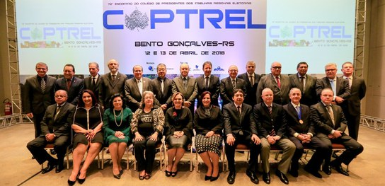
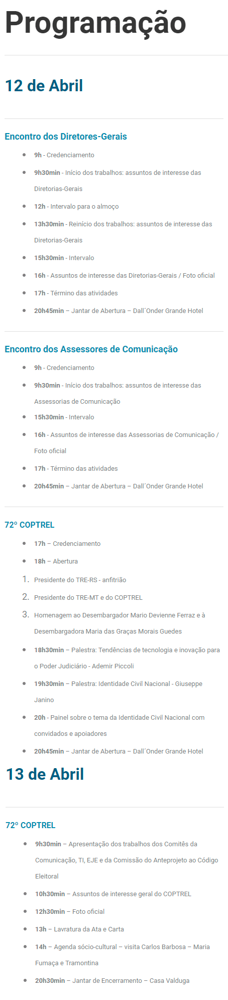

Reunião do COPTREL em Bento Gonçalves/RS - 12 e 13 de abril de 2018
Atualizado em 16/04/2018 - Kimura

Atualizado em 16/04/2018 - Kimura
Advogado, Consultor e Executivo de Tecnologia com experiência de mais oito anos como CEO e Diretor da maior empresa de TI do Rio Grande do Sul com uma forte relação com sua rede setorial, em nível nacional e internacional. Na PROCERGS, empresa com mais de R$ 170 milhões de receita, obteve resultados altamente positivos, decorrentes da redução de custos de 35%. índices expressivos de ganhos institucionais foram alcançados, sendo percebidos no clima interno e satisfação de clientes. O reconhecimento empresarial alcançado foi significativo, tanto que recebeu as mais importantes premiações setoriais, além de conquistas nas áreas de marketing, gestão da qualidade, estratégias de recursos humanos e responsabilidade social.
Experiência recente de mais de três anos no planejamento e execução do Programa de Virtualização do Poder Judiciário Estadual do RS com várias entregas focadas na simplificação e automatização dos processos judiciais.

Gestor em Tecnologia da Informação (TI). Coautor do Projeto da Urna Eletrônica do Sistema Eleitoral Brasileiro; MBA Executivo em Tecnologia da Informação pela TWA/Universidade Estácio de Sá – RJ; pósgraduado em Análise de Sistemas e Redes de Computadores pela Universidade Católica de Brasília (UCB); graduado em Matemática pelo Centro Universitário de Brasília (UniCEUB). Atualmente, atua como Ex-Presidente do PMI Chapter Distrito Federal/Brasil; Presidente do Conselho Consultivo Chapter Distrito Federal/Brasil, Membro do Comitê Gestor da Identidade Civil Nacional e Secretário de Tecnologia da Informação do Tribunal Superior Eleitoral.
Diretor de Tecnologia da Informação do Banrisul desde Abril de 2015. Graduado em Análise de Sistemas pela PUCRS e pós-graduado em Engenharia de Software pela Universidade Federal do Estado do Rio Grande do Sul tendo ainda estagiado em computação aplicada na IBM AF/E em Tarrytown, White Plains, New York – EUA.Também atua como: Presidente da ACRS, Líder do "Financial Payments Council" da Smart Card Alliance Latin America - SCALA; Membro do Conselho L’Advisory Board do Cartès Secure Connexions; Diretor de Alianças e Parcerias da SUCESU-RS, Membro do Comitê de Automação Bancaria e Tecnologia (CNAB-Febraban) e da Comissão de Conteúdo do CIAB na FEBRABAN.
Formado em Administração Pública pela UMESP, Análise de Sistemas e Processamento de Dados, Ciências Econômicas e tecnólogo em Processamento de Dados pela UFRGS. Pós-Graduado em Auditoria em Organizações do Setor Público e Gestão Orçamentária e Financeira do Setor Público. Especialização Master Public Administration, certificações OCP, OCA e Auditoria de Natureza Operacional. Há 30 anos na área de tecnologia, vem exercendo cargos ligados à gestão no setor público. Esteve à frente da Diretoria de Aeroportos da Infraero em 2016. Atual presidente da Dataprev.